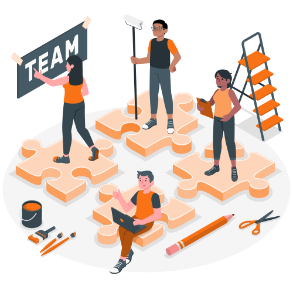

Is teamwork confusing?
Who goes first? who does this thing? who is gonna figure out how we do that?... There is a lot of questions that are asked when we work in teams, teamwork is scary and a lot of people are confused on how to start working as a team Tasky(name pending) solves that for you!

Organizing & Getting work done!
Our Website allows you to Manage tasks with ease by:
- Creating Projects
- Dividing those projects into tasks
- Separating Projects
- Checking status and history of tasks -More to be added?

Achieving your goals!
Using Tasky to organize with your team will help you make sure your projects are delivered on time and at it’s highest quality